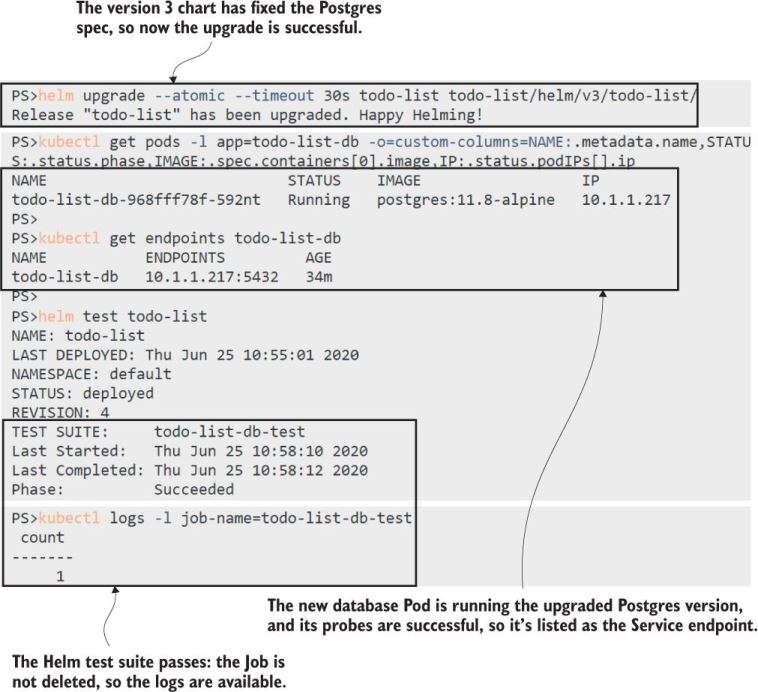

Testing With Helm
In addition to liveness and readiness checks which helps Helm do automatic rollbacks, you can add explicit tests in the form of a Job. Example:
templates/test/todo-db-test-job.yaml
apiVersion: batch/v1
kind: Job # This is a standard Job spec.
metadata:
# metadata includes name and labels
annotations:
"helm.sh/hook": test # Tells Helm the Job can be run in the test
spec: # suite for the release
completions: 1
backoffLimit: 0 # The Job should run once and not retry.
template:
spec: # The container spec runs a SQL query.
containers:
- image: postgres:11.8-alpine
command: ["psql", "-c", "SELECT COUNT(*) FROM \"public\".\"ToDos\""]This is a cool use of a Job, which basically is running an integration test! We are making sure we can exeucte a SQL query against the database here.
This is an example of how you would execute this test:
#run the upgrade
% helm upgrade --atomic --timeout 30s todo-list todo-list/helm/v3/todo-list/
# remind yourself of the chart name
% helm list
# run the test
% helm test todo-list
# inspect the logs of the SQL query from the test
% kubectl logs -l job-name=todo-list-db-test
# you can also do `kl logs jobs/todo-list-db-test`
Helm manages Jobs for you. It doesn’t clean up completed Jobs, so you can check the Pod status and logs if you need to, but it replaces them when you repeat the test command, so you can rerun the test suite as often as you like.
Pre-Upgrade Jobs
There’s one other use for Jobs that helps to make sure upgrades are safe, by running them before upgrades so you can check the current release is in a valid state to be upgraded.
A pre-upgrade job:
todo-db-check-job.yaml
apiVersion: batch/v1
kind: Job # The standard Job spec again
metadata:
name: {{ .Release.Name }}-db-check
# metadata has labels
annotations:
"helm.sh/hook": pre-upgrade # This runs before an upgrade and
"helm.sh/hook-weight": "10" # tells Helm the order in which to create
spec: # the object after the ConfigMap
template: # that the Job requires
spec:
restartPolicy: Never
containers:
- image: postgres:11.8-alpine
# env includes secrets
command: ["/scripts/check-postgres-version.sh"]
volumeMounts:
- name: scripts # Mounts the ConfigMap volume
mountPath: "/scripts"For reference, this is the ConfigMap that needs to run before the above job, and that is the background for the hook-weight
todo-db-check-configMap.yaml
apiVersion: v1
kind: ConfigMap
metadata:
name: {{ .Release.Name }}-db-check-scripts
labels:
kiamol: ch12
annotations:
"helm.sh/hook": pre-upgrade
"helm.sh/hook-weight": "1"
data:
check-postgres-version.sh: |-
#!/bin/sh
PG_VERSION=$(pg_config --version)
if [ "$PG_VERSION" == "PostgreSQL 11.6" ]; then
echo '** Postgres at expected version - good to upgrade **'
exit 0
else
echo "** ERROR - Postgres not at expected version - wanted: 11.6, got: $PG_VERSION - CANNOT UPGRADE **"
exit 1
fiIn this example, when we try to upgrade our app it will fail because of a pre-upgrade check:
#this will fail
% helm upgrade --atomic --timeout 30s todo-list todo-list/helm/v4/todo-list/
#see logs of the failed job, first get name of job which
# corresponds with the YAML
% kl get job
# see logs
% kl logs jobs/todo-list-db-checkAnnotations control where Jobs run in the Helm lifecycle, so the above job will only run for upgrades.
pre-upgrade validation and automatic rollbacks help to keep your application upgrades self-healing, too. Helm isn’t a prerequisite for that, but if you’re not using Helm, you should consider implementing these features using kubectl in your deployment pipeline.